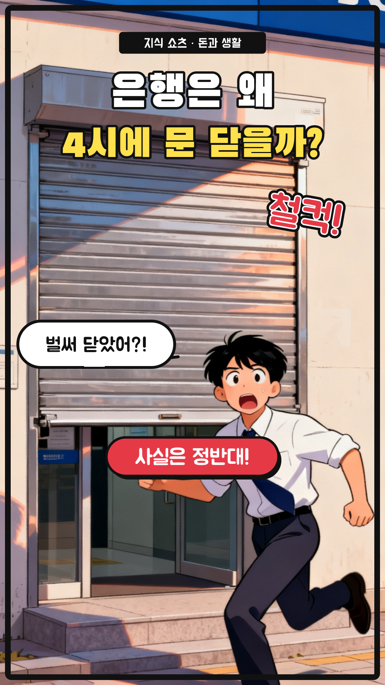
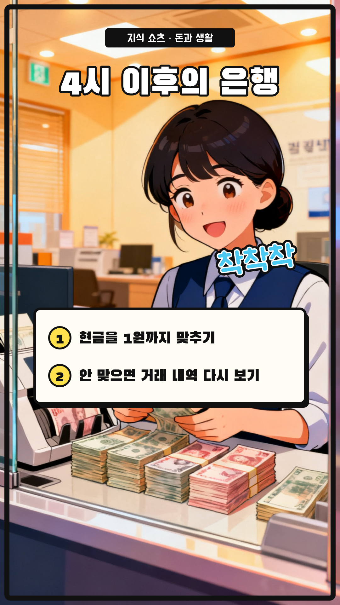
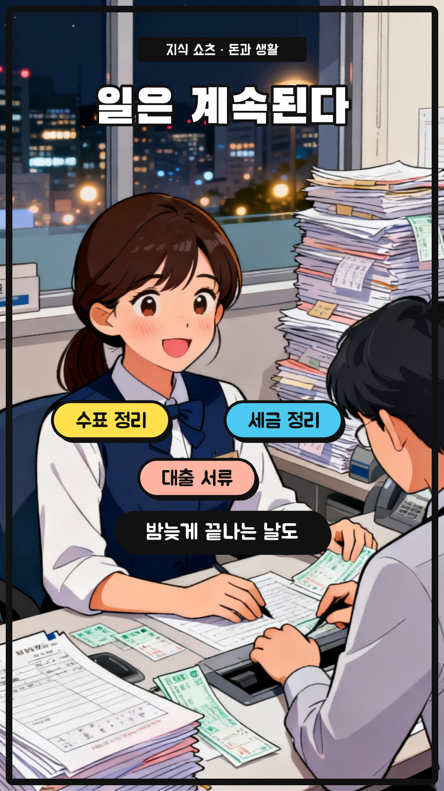
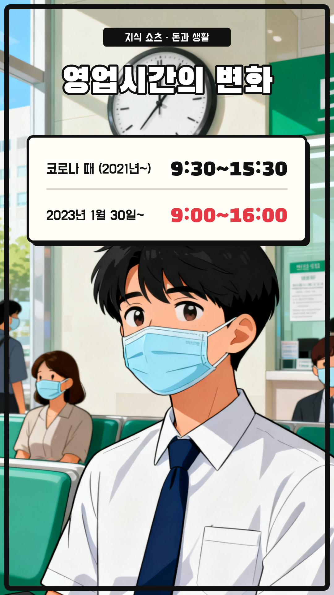
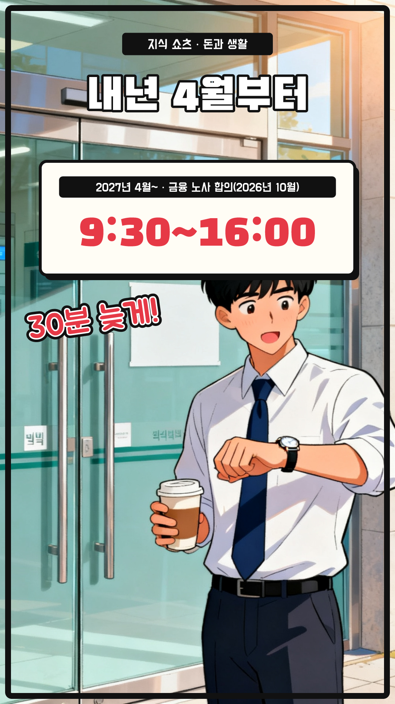
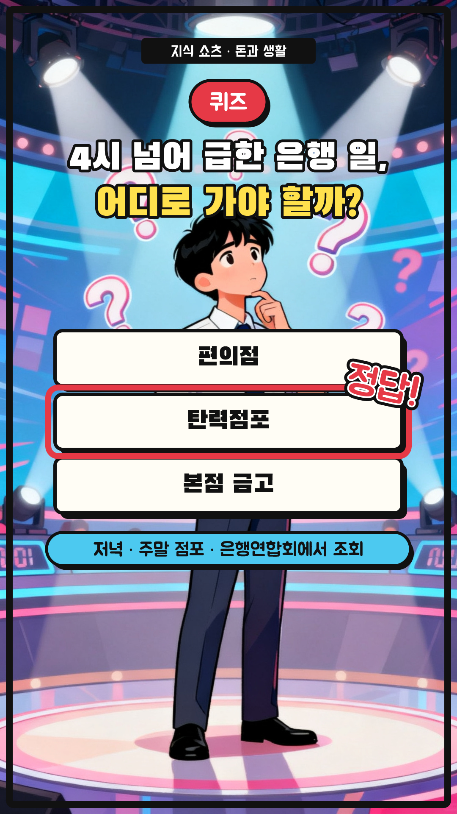
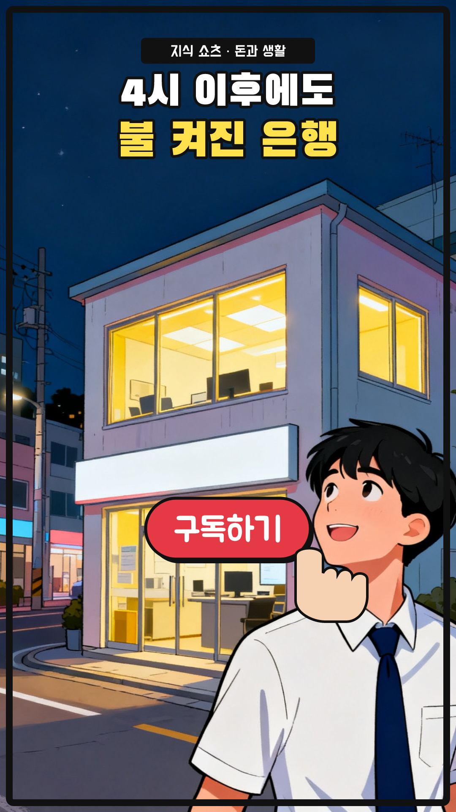

은행은 왜 4시에 문을 닫을까? — 7컷 콘티
48초 (+ 썸네일 1초) · 1080×1920 · 30fps · 자막 카드 y=1480 · 내레이션 ko-KR-Chirp3-HD-Charon · 지식 쇼츠 25편 · 웹툰풍 AI(Seedream 4.0) + 말풍선 · 효과음

S01
0:00–0:04 · 4.8초
모션
ai 카메라 이동 0.0s, title 팝 0.0s, sfx 도장 0.4s, bubble 팝 1.0s, flip 도장 3.7s
내레이션
은행은 왜 4시면 문을 닫을까요? / 직원들이 일찍 퇴근하는 걸까요? / 사실은 정반대예요

S02
0:04–0:14 · 9.2초
모션
ai 카메라 이동 0.0s, title 팝 0.0s, list 와이프 ↓ 3.0s, sfx 도장 3.4s
내레이션
셔터가 내려가면 그때부터 진짜 마감이 시작돼요 / 은행원들은 그날 오간 현금을 1원까지 맞춰 봐야 하거든요 / 안 맞으면 하루치 거래 내역을 하나하나 다시 살펴요

S03
0:14–0:17 · 3.8000000000000007초
모션
ai 카메라 이동 0.0s, title 팝 0.0s, tasks 팝 0.4s, late 페이드 2.2s
내레이션
수표와 세금 정리, 대출 서류까지, 밤늦게 끝나는 날도 있죠

S04
0:17–0:24 · 6.800000000000001초
모션
ai 카메라 이동 0.0s, title 팝 0.0s, rows 와이프 ↓ 0.5s
내레이션
코로나 때는 9시 반부터 3시 반까지로 줄었다가 / 2023년 1월에 다시 9시부터 4시로 돌아왔어요

S05
0:24–0:30 · 5.599999999999998초
모션
ai 카메라 이동 0.0s, title 팝 0.0s, new 팝 0.4s, sfx 도장 1.0s
내레이션
그런데 내년 4월부터는 문을 30분 늦게 열어요 / 오전 9시 반에 열고, 닫는 시간은 그대로 4시예요

S06
0:30–0:39 · 9.599999999999998초
모션
ai 카메라 이동 0.0s, badge 팝 0.0s, question 팝 0.3s, choices 팝 0.9s, answer 도장 4.2s, why 페이드 6.0s
내레이션
퀴즈! 4시가 넘어 급한 은행 일은 어디로 가야 할까? / 정답은, 탄력점포예요! / 저녁이나 주말에도 여는 점포를 은행연합회에서 찾을 수 있어요

S07
0:39–0:48 · 8.200000000000003초
모션
ai 카메라 이동 0.0s, look 팝 0.2s, button 팝 3.0s, finger 탭 3.6s
내레이션
오늘도 4시 이후, 은행은 불이 켜져 있어요 / 더 많은 돈 이야기가 궁금하다면 구독해 주세요